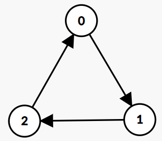
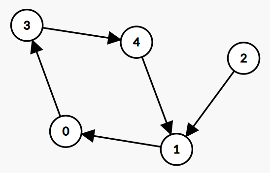
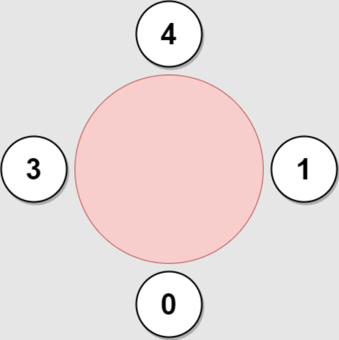
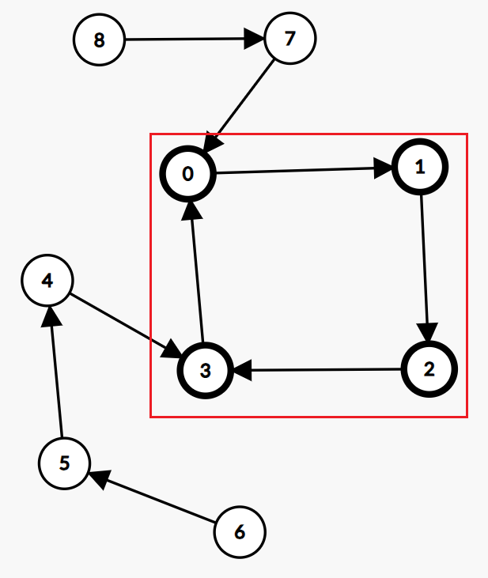
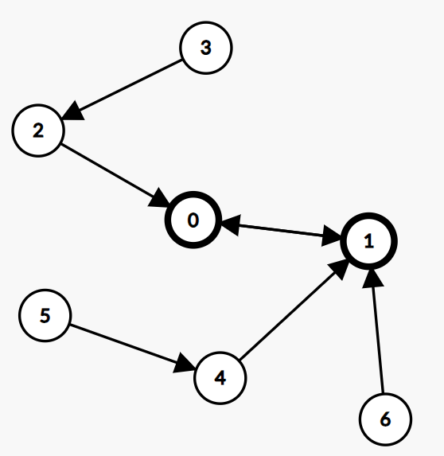
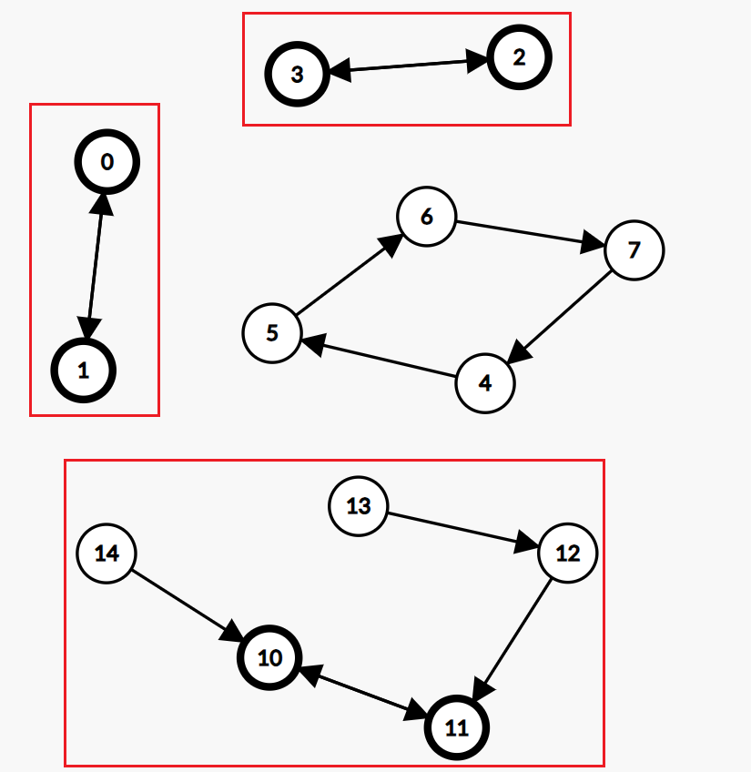

Algorithm Problem 004: Maximum Employees to Be Invited to a Meeting
Problem
Source: 2127. Maximum Employees to Be Invited to a Meeting (Daily Problem)
A company is organizing a meeting and has a list of n employees, waiting to be invited. They have arranged for a large circular table, capable of seating any number of employees.
The employees are numbered from 0 to n - 1. Each employee has a favorite person and they will attend the meeting only if they can sit next to their favorite person at the table. The favorite person of an employee is not themselves.
Given a 0-indexed integer array favorite, where favorite[i] denotes the favorite person of the ith employee, return the maximum number of employees that can be invited to the meeting.
Example 1
Input: favorite = [2,2,1,2] Output: 3


Example 2
Input: favorite = [1,2,0] Output: 3

Example 3
Input: favorite = [3,0,1,4,1] Output: 4

Approach
By the definition of favorite, if we consider each employee as a node pointing to their favorite employee, we form a directed cyclic graph with n edges, n nodes, and each node having an out-degree of 1.
Observing Examples 2 and 3, the employees attending the circular table meeting must form a cycle. This is because each node has an out-degree of 1, and an employee must sit next to his favorite employee. Therefore, the maximum number of employees attending the meeting is equal to the length of the longest cycle (Conclusion 1️⃣).
Conclusion 1️⃣ can also be argued in reverse:
In Example 3, node 2 cannot attend the meeting because inserting this employee at any position on the circular table breaks the existing cycle. For instance, if we insert 2 between 0 and 1, then the neighbors of 1 become 2 and 4, neither of which is the favorite employee, violating the conditions.
Hence, the graph formed by employees able to attend the meeting must be a cycle, and there cannot be any other node chains (linked lists) pointing to a node within the cycle.
As shown in the diagram below, the answer is $\set{0,1,2,3}$ and it cannot include $\set{7,8}$ and $\set{4,5,6}$.
However, for cycles of length 2 (two nodes pointing to each other), as long as the two employees sit together, the cycle cannot be broken. Therefore, cycles of length 2 need to be specially handled. In Example 1, nodes 1 and 2 form a cycle, and in this case, an additional employee can be added to the circular table.
Observing the following example:
Nodes 0 and 1 form a cycle of length 2, and the node chain $(3,2)$ points to 0, while the node chain $(5,4),(6)$ points to 1. The employees on the circular table in order should be $3,2,0,1,4,5$. That is, for every node in the cycle (2 nodes in total), add its longest node chain to the result set (Conclusion 2️⃣). Therefore, we choose $(5,4)$ instead of $(6)$.
Note that the graph may have multiple connected components. We need to adjust the two conclusions above:
- For cycles of length greater than 2, the entire circular table must belong to the nodes within the cycle, and no other nodes are allowed. Therefore, when there are multiple cycles, choose the one with the maximum length as the result.
- For cycles of length 2, the condition that each employee ‘will attend the meeting only if they can sit next to their favorite person at the table’ is satisfied by the cycle itself, not by occupying the entire circular table. Therefore, the final result is the union of all result sets satisfying ‘Conclusion 2️⃣’. If employees in one result set sit together, then all result sets can coexist.
Observing the example below, the answer is three cycles of length 2 and their extended node chains, totaling 8 nodes. The remaining connected component is a cycle of length 4.
Code
Based on the conclusions we drew earlier, the following information needs to be calculated in the code:
- The lengths of various cycles
- The maximum length of the node chain for every node in cycles of length 2
How to Find Cycles in the Graph?
Use topological sorting. Since this is a directed graph with $n$ edges, $n$ nodes, and each node’s out-degree is 1, nodes that cannot be visited during topological sorting must be part of a cycle.
1 | int n = favorite.length; |
How to Count Node Chains?
Node chains are single-linked lists that do not belong to a cycle. The list starts from a node with an in-degree of 0 and points to a node within a cycle. We can define a pathLen array,
where pathLen[i] represents the length of the longest node chain pointing to node i.
Since topological sorting continuously traverses nodes with a current in-degree of 0, if node a points to b, then a will be visited first. If the node chain for a is already calculated, we can easily calculate the node chain for b:
$pathLen[b] = \max\limits_{(a,b)\in E}\set{1 + pathLen[a]}$
Therefore, we can calculate pathLen during topological sorting:
1 | // Initialized to 0 |
Final Code
1 | import java.util.ArrayDeque; |